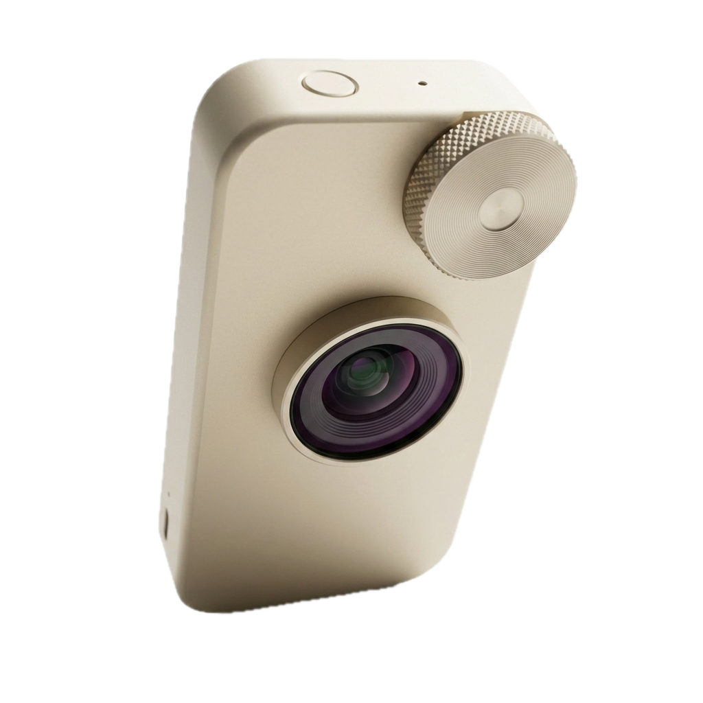

2.39:1 Cinema Stills & Live VFX.
Asymmetrische Großbild-Galerie und Live-VFX-Metadaten. Erlebe den unverfälschten anamorphen Streak-Flare und überprüfe die SMPTE 2110 / FreeD Datenübertragung in Echtzeit.

[ + 0.002mm ]
LOW ANGLE PERSPECTIVE

MODEL 100 // LOW PERSPECTIVE
TITAN UNIBODY • PRECISION DIAL
Live Lens Distortion Mapping
Das Model 100 streamt seine kalibrierte Verzeichnungskurve, den nodal point offset und optische Vignettierungs-Koeffizienten direkt in die Unreal Engine 5 nDisplay-Nodes. Keine zeitraubende Linsen-Kalibrierung am Filmset notwendig.
SMPTE 2110-41
FREED 240HZ
< 1.2MS LATENZ
LIVE METADATA STREAM // FREED PACKET MONITOR
● STREAM STATUS: 240 HZ ACTIVE
Echtzeit-Linsen-Telemetrie
{
"protocol": "FreeD_SMPTE_2110_v2",
"device_model": "NoMotion_Model_100",
"focal_length_mm": 18.002,
"aperture_f_stop": 2.00,
"focus_distance_m": 1.450,
"distortion_k1": -0.0142,
"distortion_k2": 0.0008,
"optical_center_x": 0.0012,
"optical_center_y": -0.0004,
"nodal_point_offset_z": -14.28,
"latency_ms": 1.18,
"status": "VALID_FRAME_LOCK_4K_60FPS"
}